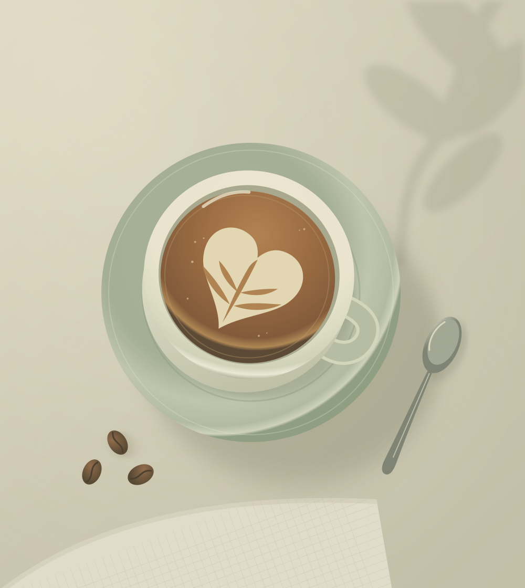

The everyday espresso
A short, rich little ritual.
Coffee, slowly.
Good coffee. Something sweet. A quiet corner to make a little more of the everyday.
Find your usualFor the first sip.And everything after.

Some things are better
when you take your time.
The idea behind Stillday
Stillday imagines a neighbourhood coffee studio that feels like a deep breath. A warm welcome, considered details, and a reason to put your phone away for a minute.
This is an independent design concept by Leoure, exploring how a small business can feel just as welcoming online as it would in person.
Pull up a chairA fictional place. A familiar feeling.
Stillday is a sample website, made to show what a thoughtful frontend can do for a small business. Have a real business in mind?
Meet the designer